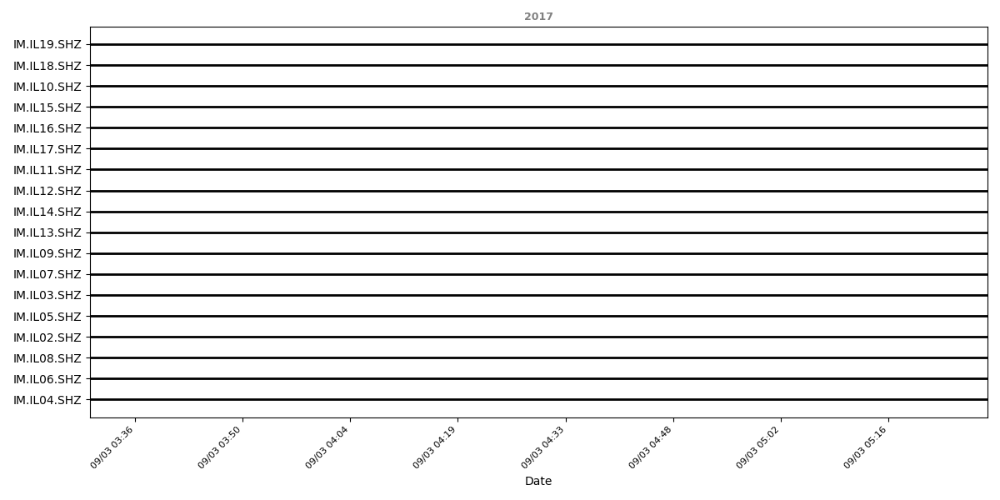
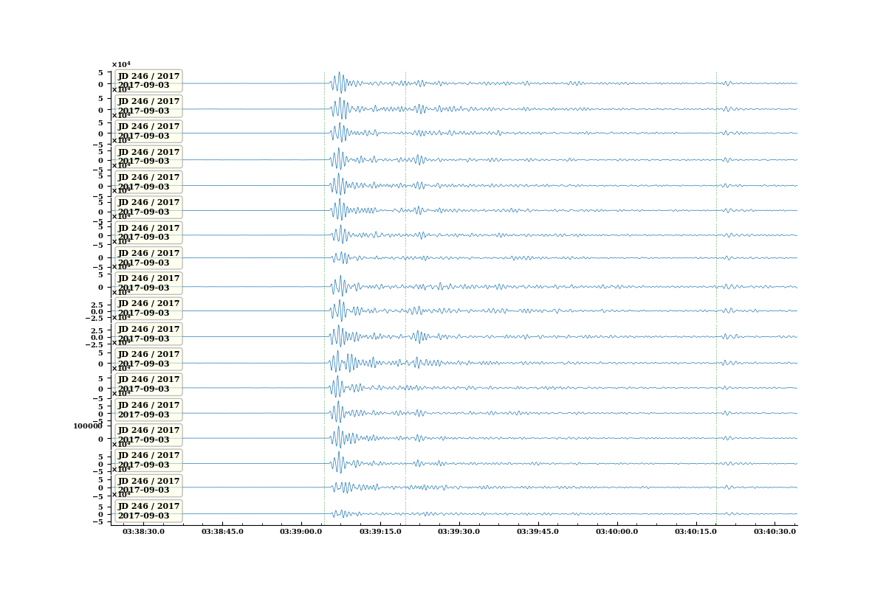
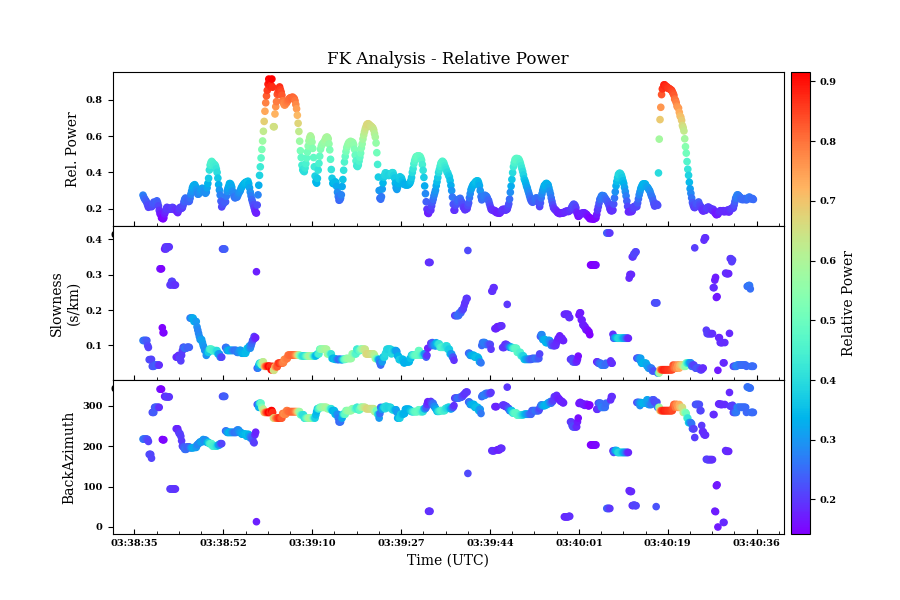
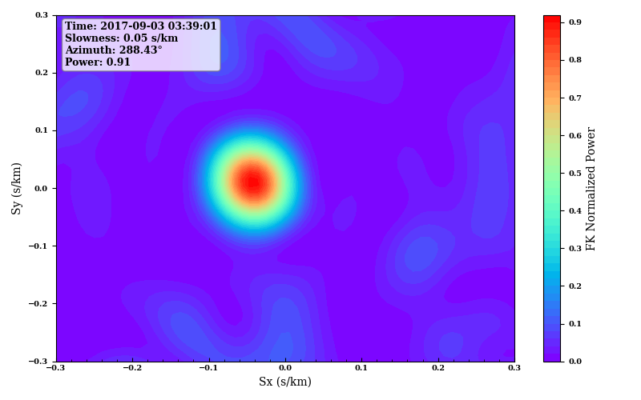
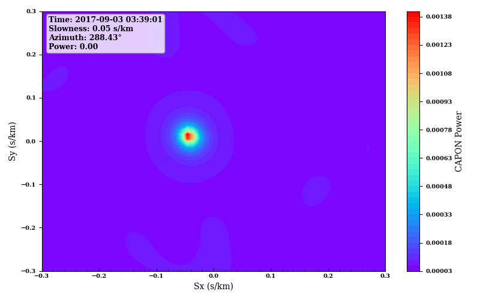

Array Processing: Beamforming Tutorial 3
In this tutorial, we will learn how to work with the commands: explore, info, quick and beamplot to estimate the back-azimuth and the apparent slowness of a teleseismic P wave recorded by a seismic array.
The event is the North Korea nuclear test of 3 September 2017 (origin time 03:30:01 UTC), recorded at the ILAR array (network IM, Eielson, Alaska). ILAR is a small-aperture array (about 10 km across) of vertical short-period sensors, so it is a nice example to see how a plane wave crosses an array.
In this tutorial we will follow this structure:
- Seismic files: tutorial3/data
- Metadata: tutorial3/metadata
- Config Files: tutorial3/configs
- Folder for the tutorial output: tutorial3/beam, this will be created by surfquake.
--tutorial3
--data
--IM.IL02..SHZ
--IM.IL03..SHZ
--IM.IL04..SHZ
......
--IM.IL19..SHZ
--metadata
--dataless.dlsv
--configs
--stream_config.yaml
--plotting_config.yaml
--beam_config.yaml
For this tutorial you need to download the seismic data here and the metadata here. In this tutorial the metadata is not optional: beamforming needs the coordinates of every station of the array.
Note
The metadata folder is called dataless_LASA, but the file dataless.dlsv contains the stations of the ILAR array (IM.IL01 to IM.IL31). It is the right file for this data.
Please, first open a terminal, activate your environment and type the following command to overview all surfquake capabilities:
A bit of theory
When a seismic wave arrives from far away, its wavefront is almost a plane when it crosses the array. Each station records the same signal, but shifted in time. These delays depend on two parameters:
- Back-azimuth (BAz): direction from the array to the source, in degrees clockwise from North.
- Apparent slowness (s): inverse of the apparent velocity of the wavefront along the surface, in s/km. Steep incident waves (teleseismic P) have small slowness, while waves travelling along the surface (Lg, Rg) have large slowness.
Beamforming tests a grid of slowness vectors, shifts and stacks the traces for each one, and looks for the one that gives the maximum coherent energy. The result for each time window is a pair (BAz, s) plus the relative power of the beam.
For this event we can compute what we expect to find (IASP91 model, epicentre 41.34°N 129.04°E):
| Parameter | Expected value |
|---|---|
| Epicentral distance | ~51° |
| P arrival at ILAR | ~03:39:05 UTC |
| Back-azimuth | ~286° |
| P apparent slowness | ~0.068 s/km (~14.7 km/s) |
Keep this table at hand, we will compare our results with it.
Please review the following documentation:
Scientific Reference:
Rost, S., & Thomas, C. (2002). Array seismology: Methods and applications. Reviews of Geophysics, 40(3).
Generate Config Files
The beamforming is a stream method, it uses all traces together. Its template is inside the stream configuration file. Let's prepare the necessary files.
surfquake make_config -h
surfquake make_config -c stream_config -o "./tutorial3/configs"
surfquake make_config -c plotting_config -o "./tutorial3/configs"
The plotting configuration is commented to explain the functionality. The parametrization for signal processing can be found here for traces and here for streams.
Explore your data
First, let's check that all stations have data for the same time span.
You should see 18 stations (IL02 to IL19) recording continuously for two hours, starting at the origin time of the test.

Look at the files header
File | IM.IL02..SHZ | IM.IL03..SHZ | IM.IL04..SHZ
Network | IM | IM | IM
Station | IL02 | IL03 | IL04
Location | | |
Channel | SHZ | SHZ | SHZ
Start Time | 2017-09-03T03:30:01.0000 | 2017-09-03T03:30:01.0000 | 2017-09-03T03:30:01.0000
End Time | 2017-09-03T05:30:01.0000 | 2017-09-03T05:30:01.0000 | 2017-09-03T05:30:01.0000
Sampling Rate (Hz) | 20.0 | 20.0 | 20.0
Delta (s) | 0.05 | 0.05 | 0.05
Npts | 144001 | 144001 | 144001
All traces have the same sampling rate (20 Hz) and the same start time. This is important: beamforming compares the traces sample by sample.
Find the P wave
Let's plot the array and look for the P arrival. We pass the metadata with -i, it will be needed later by the beamforming.
surfquake quick -h
surfquake quick -w "./tutorial3/data/*" -i "./tutorial3/metadata/dataless.dlsv" --plot_config "./tutorial3/configs/plotting_config.yaml"
- Open an interactive prompt pressing
v. - Filter the traces in the band where the P wave is clear:
After filtering, the figure is redrawn and you are back in picking mode.
- Zoom around 03:39 UTC, about 9 minutes after the origin time. You will see the P wave arriving at all stations almost at the same time.
- Set the analysis time window: place the mouse a bit before the P wave (around 03:38:50) and press
u(start time), then place it after the main P energy (around 03:39:40) and pressi(end time).

Tip
The P wave of a teleseism crosses the 10 km of ILAR in less than one second, so you will not see the delays by eye. This is exactly why we need the beamforming.
Interactive Beamforming
With the time window set, open the prompt again pressing v.
Beam: time evolution of slowness and back-azimuth
The command beam slides a short window (--win, in seconds) along the selected time window and computes the FK beamforming in each one.
--fmin,--fmax: frequency band of the analysis (Hz).--smax: maximum slowness of the grid (s/km). 0.3 s/km covers all P and S phases.--grid: slowness grid spacing (s/km). With 0.01 we can separate 0.06 from 0.07 s/km, the default 0.05 is too coarse for a teleseismic P.--win: length of each sliding window (s). It should contain a few cycles of the lowest frequency.--overlap: step between consecutive windows, as a fraction of--win. With 0.05 the window moves 5 % of its length each time (0.15 s), i.e. consecutive windows overlap by 95 %.
The figure shows, from top to bottom, the relative power, the slowness and the back-azimuth of each window, colored by relative power.

Look at the windows with the highest relative power at the P arrival. The back-azimuth should be close to 286° and the slowness close to 0.068 s/km.
Slowness map of a single window
The beam figure is interactive. Point with the mouse at a power peak, press a number to select the method and then press e to plot the slowness map of that window:
KEY | ACTION
--- | ------
1 | Conventional FK
2 | Capon
3 | Multitaper Coherence
4 | Music for 1 signal
5 | Music for 2 signals
6 | Music for 3 signals

The maximum of the map gives the slowness vector of the wave: its distance to the centre is the slowness, and its direction is the back-azimuth.
Alternatively, you can compute the slowness map of the whole selected time window directly from the prompt with smap. Write the method in capital letters (FK, CAPON, MTP.COHERENCE, MUSIC):
help smap
smap --method FK --fmin 0.8 --fmax 2.2 --smax 0.3 --grid 0.01
smap --method CAPON --fmin 0.8 --fmax 2.2 --smax 0.3 --grid 0.01
Compare both maps. Capon gives a sharper maximum than the conventional FK, because it suppresses the energy coming from other directions.

Note
For smap, select a short time window around the P onset (a few seconds) with u and i. A long window mixes the P wave with the coda and the noise, and the maximum becomes wider.
To close the interactive session:
Automatic
In this section we compute the same beamforming, but using a config file. The advantage is that we can automate the process for many events and save the results for later use.
Make a copy of stream_config.yaml and name it beam_config.yaml. Keep the pre-processing, cut the traces around the P wave and enable the beam step:
Analysis:
process_1:
name: 'rmean'
method: 'linear'
process_2:
name: 'taper'
method: 'cosine'
max_percentage: 0.05
process_3:
name: 'cut_stream'
method: 'absolute'
start: 2017-09-03T03:38:30
end: 2017-09-03T03:41:30
process_4:
name: 'beam'
method: 'FK'
timewindow: 3.0
overlap: 0.05
fmin: 0.8
fmax: 2.2
smax: 0.3
slow_grid: 0.01
output_folder: './tutorial3/beam'
cut_streamkeeps three minutes around the P wave. Without it, the beamforming would run along the two hours of data.methodcan beFKorCAPON.- The beamforming filters the traces in the band
fmin–fmax, so we do not need afilterstep.
Run the quick command in automatic mode. Remember to pass the metadata:
surfquake quick -w "./tutorial3/data/*" -i "./tutorial3/metadata/dataless.dlsv" -c "./tutorial3/configs/beam_config.yaml" -a
The result is saved in ./tutorial3/beam as a binary file named after the year and the julian day of the first trace, 2017.246.beam.
Plot the results and find the P wave automatically
Open the result with the command beamplot:
You will get the same figure as in the interactive section, and you can also open the slowness maps with the keys 1–6 and e.
Now let's ask surfquake to find the power peaks that match a P wave. The option --find_solutions accepts the shortcuts regional and teleseismic, or your own slowness ranges in JSON format. The teleseismic shortcut uses 0.04–0.07 s/km for P, and our expected value (0.068 s/km) is very close to the limit, so we define our own range:
surfquake beamplot -f "./tutorial3/beam/2017.246.beam" --find_solutions '{"P": [0.05, 0.08]}' --baz_range 260 310 --min_power 0.6 --write_path "./tutorial3/beam/solutions.txt"
--baz_range: only accept back-azimuths between 260° and 310°.--min_power: minimum relative power to accept a peak.--write_path: the solutions are appended to this text file.
The terminal shows the detected peaks:
[INFO] Found N beam peaks:
2017-09-03T03:39:... | Phase: P | BAz: ...° | S: ... s/km | Pow: ...
Discussion
Compare your solution with the expected values of the table at the beginning of the tutorial.
- Back-azimuth: the measured value is usually a few degrees off the theoretical one. The difference comes from the structure under the array and along the path, which the 1D model does not include.
- Slowness: the measured slowness depends on the slowness grid. With
slow_grid: 0.05you would only obtain 0.05 or 0.10 s/km, so always use a grid fine enough for the phase you are looking for. - Phase identification: a slowness of ~0.068 s/km together with a back-azimuth pointing to the Korean peninsula confirms that this is the P wave from the test, and not a local or regional event.
As an exercise, try:
- Change the band to
fmin: 2.0andfmax: 4.0. What happens with the relative power? Why? - Change
methodtoCAPONand compare the solutions. - Move the
cut_streamwindow to the PcP and PP arrivals (about 1.5 and 2 minutes after P). Can you find them? Which slowness do they have?
Using Bash script
Finally, we can concatenate the automatic steps in a bash script file. Create a file named run_beam.sh:
#!/bin/bash
# Activate your conda environment
eval "$(conda shell.bash hook)"
conda activate surfquake # Replace with the name of your environment
surfquake quick -w "./tutorial3/data/*" -i "./tutorial3/metadata/dataless.dlsv" -c "./tutorial3/configs/beam_config.yaml" -a
surfquake beamplot -f "./tutorial3/beam/2017.246.beam" --find_solutions '{"P": [0.05, 0.08]}' --baz_range 260 310 --write_path "./tutorial3/beam/solutions.txt" --save_path "./tutorial3/beam/beam.png"
Open a terminal in your working directory and run it: